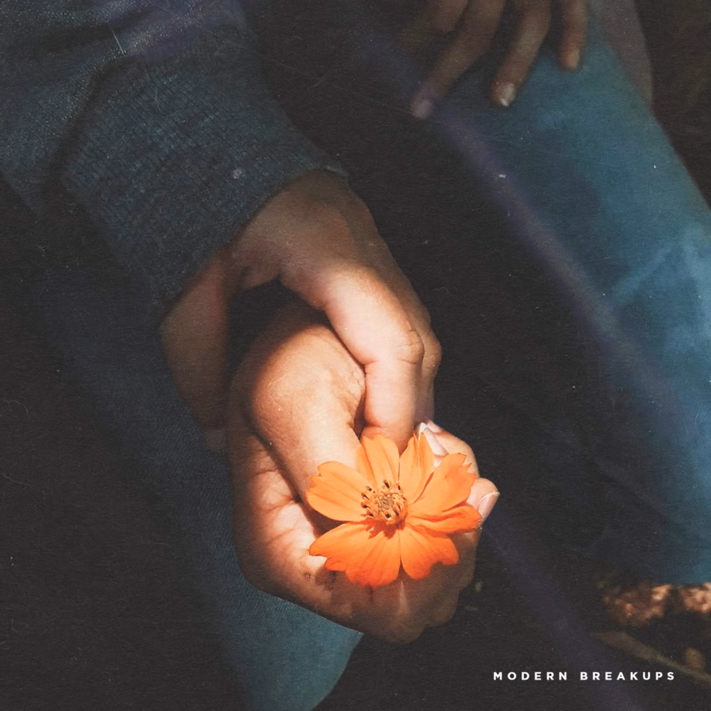

DEAN - D (Half Moon)
The title of the track “D” is meant to resemble half a moon, as the song expresses the state of being somehow empty due to a lover’s absence.

slchld - Maybe We Need A Break
slchld (pronounced “Seoul child”), whose birth name is 장두혁 (Doo Hyuk Jang), is an alternative R&B artist and producer.